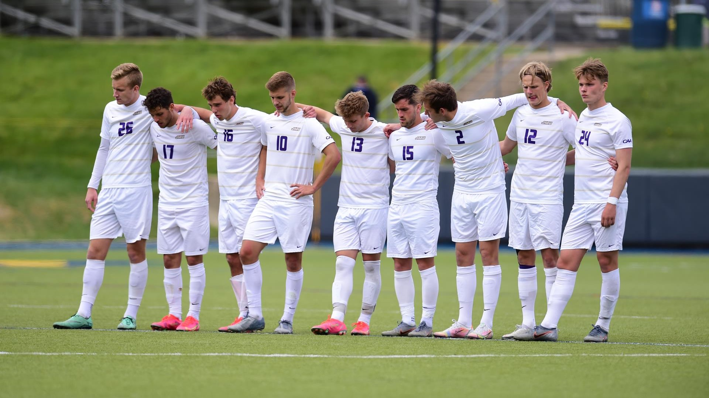
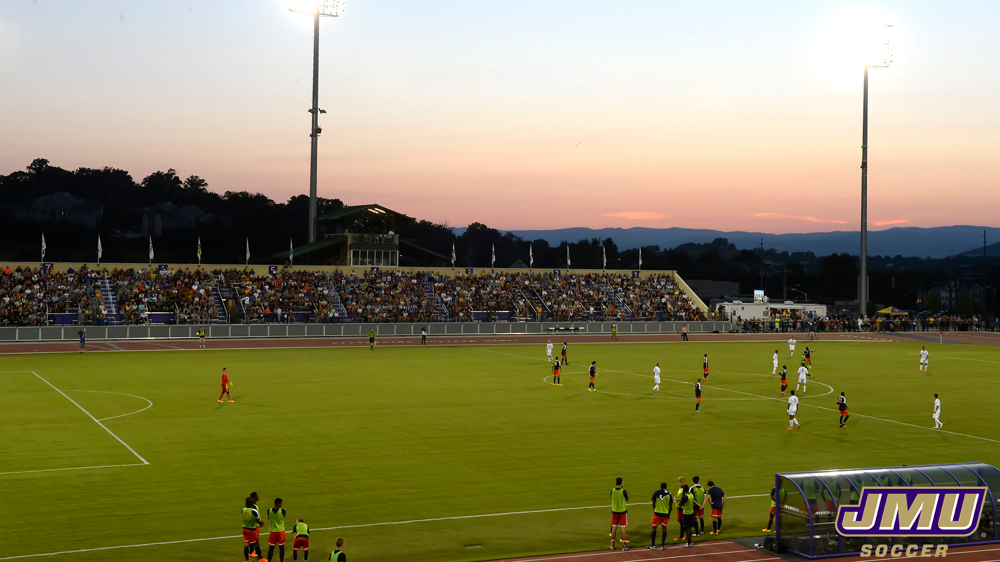

Schedule 2023
JMU VS Binghamton
8/25/22
JMU VS NJIT
8/28/22
JMU at Virginia
9/1/22
JMU at Duquesne
9/6/22
JMU at NC State
9/13/22
JMU VS Georgia St.
9/17/22
JMU VS Georgetown
9/20/22
JMU at Old Dominion
9/25/22
JMU VS George Washington
9/28/22
JMU VS Kentucky
10/1/22
JMU VS Gardner-Webb
10/8/22
JMU at American
10/11/22
JMU at Georgia South.
10/14/22
JMU VS West Virginia
10/19/22
JMU at South Carolina
10/23/22
JMU VS Coastal Carolina
10/28/22
JMU at Marshall
11/1/22
JMU at Marshall
11/6/22
JMU VS Georgia St.
11/9/22
JMU at Kentucky
11/13/22
James Madison Men's Soccer

The James Madison Dukes men's soccer team is an intercollegiate varsity sports team of James Madison University.
As of the 2022 season, the Dukes are members of the National Collegiate Athletic Association Division I Sun Belt
Conference. They began play in 1968. The Dukes play their home games at Sentara Park.
Stadium

| Name |
Built |
Capacity |
| Sentara Park |
Fall 2012 |
1,500 |
Social Media